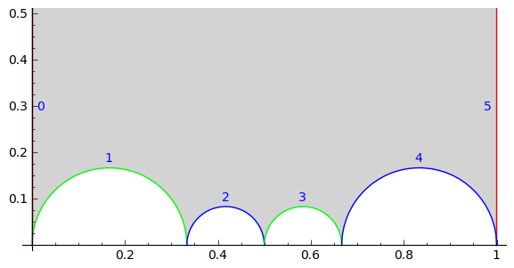

Farey symbol for arithmetic subgroups of \(\PSL_2(\ZZ)\)¶
AUTHORS:
Hartmut Monien (08 - 2011)
based on the KFarey package by Chris Kurth. Implemented as C++ module for speed.
- class sage.modular.arithgroup.farey_symbol.Farey[source]¶
Bases:
objectA class for calculating Farey symbols of arithmetics subgroups of \(\PSL_2(\ZZ)\).
The arithmetic subgroup can be either any of the congruence subgroups implemented in Sage, i.e. Gamma, Gamma0, Gamma1 and GammaH or a subgroup of \(\PSL_2(\ZZ)\) which is given by a user written helper class defining membership in that group.
REFERENCES:
Ravi S. Kulkarni, ‘’An arithmetic-geometric method in the study of the subgroups of the modular group’’, Amer. J. Math., 113(6):1053–1133, 1991.
INPUT:
G– an arithmetic subgroup of \(\PSL_2(\ZZ)\)
EXAMPLES:
Create a Farey symbol for the group \(\Gamma_0(11)\):
sage: f = FareySymbol(Gamma0(11)); f FareySymbol(Congruence Subgroup Gamma0(11))
>>> from sage.all import * >>> f = FareySymbol(Gamma0(Integer(11))); f FareySymbol(Congruence Subgroup Gamma0(11))
Calculate the generators:
sage: f.generators() [ [1 1] [ 7 -2] [ 8 -3] [-1 0] [0 1], [11 -3], [11 -4], [ 0 -1] ]
>>> from sage.all import * >>> f.generators() [ [1 1] [ 7 -2] [ 8 -3] [-1 0] [0 1], [11 -3], [11 -4], [ 0 -1] ]
Pickling the FareySymbol and recovering it:
sage: f == loads(dumps(f)) True
>>> from sage.all import * >>> f == loads(dumps(f)) True
Calculate the index of \(\Gamma_H(33, [2, 5])\) in \(\PSL_2(\ZZ)\) via FareySymbol:
sage: FareySymbol(GammaH(33, [2, 5])).index() 48
>>> from sage.all import * >>> FareySymbol(GammaH(Integer(33), [Integer(2), Integer(5)])).index() 48
Calculate the generators of \(\Gamma_1(4)\):
sage: FareySymbol(Gamma1(4)).generators() [ [1 1] [-3 1] [0 1], [-4 1] ]
>>> from sage.all import * >>> FareySymbol(Gamma1(Integer(4))).generators() [ [1 1] [-3 1] [0 1], [-4 1] ]
Calculate the generators of the
exampleof an index 10 arithmetic subgroup given by Tim Hsu:sage: from sage.modular.arithgroup.arithgroup_perm import HsuExample10 sage: FareySymbol(HsuExample10()).generators() [ [1 2] [-2 1] [ 4 -3] [0 1], [-7 3], [ 3 -2] ]
>>> from sage.all import * >>> from sage.modular.arithgroup.arithgroup_perm import HsuExample10 >>> FareySymbol(HsuExample10()).generators() [ [1 2] [-2 1] [ 4 -3] [0 1], [-7 3], [ 3 -2] ]
Calculate the generators of the group \(\Gamma' = \Gamma_0(8)\cap\Gamma_1(4)\) using a helper class to define group membership:
sage: class GPrime: ....: def __contains__(self, M): ....: return M in Gamma0(8) and M in Gamma1(4) sage: FareySymbol(GPrime()).generators() [ [1 1] [ 5 -1] [ 5 -2] [0 1], [16 -3], [ 8 -3] ]
>>> from sage.all import * >>> class GPrime: ... def __contains__(self, M): ... return M in Gamma0(Integer(8)) and M in Gamma1(Integer(4)) >>> FareySymbol(GPrime()).generators() [ [1 1] [ 5 -1] [ 5 -2] [0 1], [16 -3], [ 8 -3] ]
Calculate cusps of arithmetic subgroup defined via permutation group:
sage: L = SymmetricGroup(4)('(1, 2, 3)') sage: R = SymmetricGroup(4)('(1, 2, 4)') sage: FareySymbol(ArithmeticSubgroup_Permutation(L, R)).cusps() [-1, Infinity]
>>> from sage.all import * >>> L = SymmetricGroup(Integer(4))('(1, 2, 3)') >>> R = SymmetricGroup(Integer(4))('(1, 2, 4)') >>> FareySymbol(ArithmeticSubgroup_Permutation(L, R)).cusps() [-1, Infinity]
Calculate the left coset representation of \(\Gamma_H(8, [3])\):
sage: FareySymbol(GammaH(8, [3])).coset_reps() [ [1 0] [ 4 -1] [ 3 -1] [ 2 -1] [ 1 -1] [ 3 -1] [ 2 -1] [-1 0] [0 1], [ 1 0], [ 1 0], [ 1 0], [ 1 0], [ 4 -1], [ 3 -1], [ 3 -1], [ 1 -1] [-1 0] [ 0 -1] [-1 0] [ 2 -1], [ 2 -1], [ 1 -1], [ 1 -1] ]
>>> from sage.all import * >>> FareySymbol(GammaH(Integer(8), [Integer(3)])).coset_reps() [ [1 0] [ 4 -1] [ 3 -1] [ 2 -1] [ 1 -1] [ 3 -1] [ 2 -1] [-1 0] [0 1], [ 1 0], [ 1 0], [ 1 0], [ 1 0], [ 4 -1], [ 3 -1], [ 3 -1], [ 1 -1] [-1 0] [ 0 -1] [-1 0] [ 2 -1], [ 2 -1], [ 1 -1], [ 1 -1] ]
- coset_reps()[source]¶
Left coset of the arithmetic group of the FareySymbol.
EXAMPLES:
Calculate the left coset of \(\Gamma_0(6)\):
sage: FareySymbol(Gamma0(6)).coset_reps() [ [1 0] [ 3 -1] [ 2 -1] [ 1 -1] [ 2 -1] [ 3 -2] [ 1 -1] [-1 0] [0 1], [ 1 0], [ 1 0], [ 1 0], [ 3 -1], [ 2 -1], [ 2 -1], [ 2 -1], [ 1 -1] [ 0 -1] [-1 0] [-2 1] [ 3 -2], [ 1 -1], [ 1 -1], [ 1 -1] ]
>>> from sage.all import * >>> FareySymbol(Gamma0(Integer(6))).coset_reps() [ [1 0] [ 3 -1] [ 2 -1] [ 1 -1] [ 2 -1] [ 3 -2] [ 1 -1] [-1 0] [0 1], [ 1 0], [ 1 0], [ 1 0], [ 3 -1], [ 2 -1], [ 2 -1], [ 2 -1], [ 1 -1] [ 0 -1] [-1 0] [-2 1] [ 3 -2], [ 1 -1], [ 1 -1], [ 1 -1] ]
- cusp_class(c)[source]¶
Cusp class of a cusp in the FareySymbol.
INPUT:
c– a cusp
EXAMPLES:
sage: FareySymbol(Gamma0(12)).cusp_class(Cusp(1, 12)) 5
>>> from sage.all import * >>> FareySymbol(Gamma0(Integer(12))).cusp_class(Cusp(Integer(1), Integer(12))) 5
- cusp_widths()[source]¶
Cusps widths of the FareySymbol.
EXAMPLES:
sage: FareySymbol(Gamma0(6)).cusp_widths() [6, 2, 3, 1]
>>> from sage.all import * >>> FareySymbol(Gamma0(Integer(6))).cusp_widths() [6, 2, 3, 1]
- cusps()[source]¶
Cusps of the FareySymbol.
EXAMPLES:
sage: FareySymbol(Gamma0(6)).cusps() [0, 1/3, 1/2, Infinity]
>>> from sage.all import * >>> FareySymbol(Gamma0(Integer(6))).cusps() [0, 1/3, 1/2, Infinity]
- fractions()[source]¶
Fractions of the FareySymbol.
EXAMPLES:
sage: FareySymbol(Gamma(4)).fractions() [0, 1/2, 1, 3/2, 2, 5/2, 3, 7/2, 4]
>>> from sage.all import * >>> FareySymbol(Gamma(Integer(4))).fractions() [0, 1/2, 1, 3/2, 2, 5/2, 3, 7/2, 4]
- fundamental_domain(alpha=1, fill=True, thickness=1, color='lightgray', color_even='white', zorder=2, linestyle='solid', show_pairing=True, tesselation='Dedekind', ymax=1, **options)[source]¶
Plot a fundamental domain of an arithmetic subgroup of \(\PSL_2(\ZZ)\) corresponding to the Farey symbol.
OPTIONS:
fill– boolean (default:True); fill the fundamental domainlinestyle– string (default:'solid'); the style of the line, which is one of ‘dashed’, ‘dotted’, ‘solid’, ‘dashdot’, or ‘–‘, ‘:’, ‘-’, ‘-.’, respectivelycolor– (default:'lightgray') fill color for odd part of Dedekind tesselationshow_pairing– boolean (default:True); flag for pairingtesselation– (default:'Dedekind') the type of hyperbolic tesselation which is one of'coset','Dedekind'orNonerespectivelycolor_even– fill color for even parts of Dedekind tesselation (default:'white'); ignored for other tesselationsthickness– float (default: \(1\)) the thickness of the lineymax– float (default: \(1\)) maximal height
EXAMPLES:
For example, to plot the fundamental domain of \(\Gamma_0(11)\) with pairings use the following command:
sage: FareySymbol(Gamma0(11)).fundamental_domain() # needs sage.plot sage.symbolic Graphics object consisting of 54 graphics primitives
>>> from sage.all import * >>> FareySymbol(Gamma0(Integer(11))).fundamental_domain() # needs sage.plot sage.symbolic Graphics object consisting of 54 graphics primitives
indicating that side 1 is paired with side 3 and side 2 is paired with side 4, see also
paired_sides().To plot the fundamental domain of \(\Gamma(3)\) without pairings use the following command:
sage: FareySymbol(Gamma(3)).fundamental_domain(show_pairing=False) # needs sage.plot sage.symbolic Graphics object consisting of 48 graphics primitives
>>> from sage.all import * >>> FareySymbol(Gamma(Integer(3))).fundamental_domain(show_pairing=False) # needs sage.plot sage.symbolic Graphics object consisting of 48 graphics primitives
Plot the fundamental domain of \(\Gamma_0(23)\) showing the left coset representatives:
sage: FareySymbol(Gamma0(23)).fundamental_domain(tesselation='coset') # needs sage.plot sage.symbolic Graphics object consisting of 58 graphics primitives
>>> from sage.all import * >>> FareySymbol(Gamma0(Integer(23))).fundamental_domain(tesselation='coset') # needs sage.plot sage.symbolic Graphics object consisting of 58 graphics primitives
The same as above but with a custom linestyle:
sage: FareySymbol(Gamma0(23)).fundamental_domain(tesselation='coset', # needs sage.plot sage.symbolic ....: linestyle=':', ....: thickness='2') Graphics object consisting of 58 graphics primitives
>>> from sage.all import * >>> FareySymbol(Gamma0(Integer(23))).fundamental_domain(tesselation='coset', # needs sage.plot sage.symbolic ... linestyle=':', ... thickness='2') Graphics object consisting of 58 graphics primitives
- generators()[source]¶
Minimal set of generators of the group of the FareySymbol.
EXAMPLES:
Calculate the generators of \(\Gamma_0(6)\):
sage: FareySymbol(Gamma0(6)).generators() [ [1 1] [ 5 -1] [ 7 -3] [-1 0] [0 1], [ 6 -1], [12 -5], [ 0 -1] ]
>>> from sage.all import * >>> FareySymbol(Gamma0(Integer(6))).generators() [ [1 1] [ 5 -1] [ 7 -3] [-1 0] [0 1], [ 6 -1], [12 -5], [ 0 -1] ]
Calculate the generators of \(\SL_2(\ZZ)\):
sage: FareySymbol(SL2Z).generators() [ [ 0 -1] [ 0 -1] [ 1 0], [ 1 -1] ]
>>> from sage.all import * >>> FareySymbol(SL2Z).generators() [ [ 0 -1] [ 0 -1] [ 1 0], [ 1 -1] ]
The unique index 2 even subgroup and index 4 odd subgroup each get handled correctly:
sage: # needs sage.groups sage: FareySymbol(ArithmeticSubgroup_Permutation(S2="(1,2)", S3="()")).generators() [ [ 0 1] [-1 1] [-1 -1], [-1 0] ] sage: FareySymbol(ArithmeticSubgroup_Permutation(S2="(1,2, 3, 4)", S3="(1,3)(2,4)")).generators() [ [ 0 1] [-1 1] [-1 -1], [-1 0] ]
>>> from sage.all import * >>> # needs sage.groups >>> FareySymbol(ArithmeticSubgroup_Permutation(S2="(1,2)", S3="()")).generators() [ [ 0 1] [-1 1] [-1 -1], [-1 0] ] >>> FareySymbol(ArithmeticSubgroup_Permutation(S2="(1,2, 3, 4)", S3="(1,3)(2,4)")).generators() [ [ 0 1] [-1 1] [-1 -1], [-1 0] ]
- genus()[source]¶
Return the genus of the arithmetic group of the FareySymbol.
EXAMPLES:
sage: [FareySymbol(Gamma0(n)).genus() for n in range(16, 32)] [0, 1, 0, 1, 1, 1, 2, 2, 1, 0, 2, 1, 2, 2, 3, 2]
>>> from sage.all import * >>> [FareySymbol(Gamma0(n)).genus() for n in range(Integer(16), Integer(32))] [0, 1, 0, 1, 1, 1, 2, 2, 1, 0, 2, 1, 2, 2, 3, 2]
- index()[source]¶
Return the index of the arithmetic group of the FareySymbol in \(\PSL_2(\ZZ)\).
EXAMPLES:
sage: [FareySymbol(Gamma0(n)).index() for n in range(1, 16)] [1, 3, 4, 6, 6, 12, 8, 12, 12, 18, 12, 24, 14, 24, 24]
>>> from sage.all import * >>> [FareySymbol(Gamma0(n)).index() for n in range(Integer(1), Integer(16))] [1, 3, 4, 6, 6, 12, 8, 12, 12, 18, 12, 24, 14, 24, 24]
- level()[source]¶
Return the level of the arithmetic group of the FareySymbol.
EXAMPLES:
sage: [FareySymbol(Gamma0(n)).level() for n in range(1, 16)] [1, 2, 3, 4, 5, 6, 7, 8, 9, 10, 11, 12, 13, 14, 15]
>>> from sage.all import * >>> [FareySymbol(Gamma0(n)).level() for n in range(Integer(1), Integer(16))] [1, 2, 3, 4, 5, 6, 7, 8, 9, 10, 11, 12, 13, 14, 15]
- nu2()[source]¶
Return the number of elliptic points of order two.
EXAMPLES:
sage: [FareySymbol(Gamma0(n)).nu2() for n in range(1, 16)] [1, 1, 0, 0, 2, 0, 0, 0, 0, 2, 0, 0, 2, 0, 0]
>>> from sage.all import * >>> [FareySymbol(Gamma0(n)).nu2() for n in range(Integer(1), Integer(16))] [1, 1, 0, 0, 2, 0, 0, 0, 0, 2, 0, 0, 2, 0, 0]
- nu3()[source]¶
Return the number of elliptic points of order three.
EXAMPLES:
sage: [FareySymbol(Gamma0(n)).nu3() for n in range(1, 16)] [1, 0, 1, 0, 0, 0, 2, 0, 0, 0, 0, 0, 2, 0, 0]
>>> from sage.all import * >>> [FareySymbol(Gamma0(n)).nu3() for n in range(Integer(1), Integer(16))] [1, 0, 1, 0, 0, 0, 2, 0, 0, 0, 0, 0, 2, 0, 0]
- paired_sides()[source]¶
Pairs of index of the sides of the fundamental domain of the Farey symbol of the arithmetic group. The sides of the hyperbolic polygon are numbered 0, 1, … from left to right.

EXAMPLES:
sage: FareySymbol(Gamma0(11)).paired_sides() [(0, 5), (1, 3), (2, 4)]
>>> from sage.all import * >>> FareySymbol(Gamma0(Integer(11))).paired_sides() [(0, 5), (1, 3), (2, 4)]
indicating that the side 0 is paired with 5, 1 with 3 and 2 with 4.
- pairing_matrices()[source]¶
Pairing matrices of the sides of the fundamental domain. The sides of the hyperbolic polygon are numbered 0, 1, … from left to right.
EXAMPLES:
sage: FareySymbol(Gamma0(6)).pairing_matrices() [ [1 1] [ 5 -1] [ 7 -3] [ 5 -3] [ 1 -1] [-1 1] [0 1], [ 6 -1], [12 -5], [12 -7], [ 6 -5], [ 0 -1] ]
>>> from sage.all import * >>> FareySymbol(Gamma0(Integer(6))).pairing_matrices() [ [1 1] [ 5 -1] [ 7 -3] [ 5 -3] [ 1 -1] [-1 1] [0 1], [ 6 -1], [12 -5], [12 -7], [ 6 -5], [ 0 -1] ]
- pairing_matrices_to_tietze_index()[source]¶
Obtain the translation table from pairing matrices to generators.
The result is cached.
OUTPUT:
a list where the \(i\)-th entry is a nonzero integer \(k\), such that if \(k > 0\) then the \(i\)-th pairing matrix is (up to sign) the \((k-1)\)-th generator and, if \(k < 0\), then the \(i\)-th pairing matrix is (up to sign) the inverse of the \((-k-1)\)-th generator.
EXAMPLES:
sage: F = Gamma0(40).farey_symbol() sage: table = F.pairing_matrices_to_tietze_index() sage: table[12] (-2, -1) sage: F.pairing_matrices()[12] [ 3 -1] [ 40 -13] sage: F.generators()[1]**-1 [ -3 1] [-40 13]
>>> from sage.all import * >>> F = Gamma0(Integer(40)).farey_symbol() >>> table = F.pairing_matrices_to_tietze_index() >>> table[Integer(12)] (-2, -1) >>> F.pairing_matrices()[Integer(12)] [ 3 -1] [ 40 -13] >>> F.generators()[Integer(1)]**-Integer(1) [ -3 1] [-40 13]
- pairings()[source]¶
Pairings of the sides of the fundamental domain of the Farey symbol of the arithmetic group.
The sides of the hyperbolic polygon are numbered 0, 1, … from left to right. Conventions: even pairings are denoted by -2, odd pairings by -3 while free pairings are denoted by an integer number greater than zero.
EXAMPLES:
Odd pairings:
sage: FareySymbol(Gamma0(7)).pairings() [1, -3, -3, 1]
>>> from sage.all import * >>> FareySymbol(Gamma0(Integer(7))).pairings() [1, -3, -3, 1]
Even and odd pairings:
FareySymbol(Gamma0(13)).pairings() [1, -3, -2, -2, -3, 1]
Only free pairings:
sage: FareySymbol(Gamma0(23)).pairings() [1, 2, 3, 5, 3, 4, 2, 4, 5, 1]
>>> from sage.all import * >>> FareySymbol(Gamma0(Integer(23))).pairings() [1, 2, 3, 5, 3, 4, 2, 4, 5, 1]
- reduce_to_cusp(r)[source]¶
Transformation of a rational number to cusp representative.
INPUT:
r– a rational number
EXAMPLES:
sage: FareySymbol(Gamma0(12)).reduce_to_cusp(5/8) [ 5 -3] [12 -7]
>>> from sage.all import * >>> FareySymbol(Gamma0(Integer(12))).reduce_to_cusp(Integer(5)/Integer(8)) [ 5 -3] [12 -7]
Reduce 11/17 to a cusp of for HsuExample10():
sage: # needs sage.groups sage: from sage.modular.arithgroup.arithgroup_perm import HsuExample10 sage: f = FareySymbol(HsuExample10()) sage: f.reduce_to_cusp(11/17) [14 -9] [-3 2] sage: _.acton(11/17) 1 sage: f.cusps()[f.cusp_class(11/17)] 1
>>> from sage.all import * >>> # needs sage.groups >>> from sage.modular.arithgroup.arithgroup_perm import HsuExample10 >>> f = FareySymbol(HsuExample10()) >>> f.reduce_to_cusp(Integer(11)/Integer(17)) [14 -9] [-3 2] >>> _.acton(Integer(11)/Integer(17)) 1 >>> f.cusps()[f.cusp_class(Integer(11)/Integer(17))] 1
- word_problem(M, output='standard', check=True)[source]¶
Solve the word problem (up to sign) using this Farey symbol.
INPUT:
M– an element \(M\) of \(\SL_2(\ZZ)\)output– (default:'standard') should be one of'standard','syllables','gens'.check– boolean (default:True); whether to check for correct input and output
OUTPUT:
A solution to the word problem for the matrix \(M\). The format depends on the
outputparameter, as follows.'standard'returns the so called Tietze representation, which consists of a tuple of nonzero integers. A positive integer \(i\) indicates the \(i\)-th generator (that is,self.generators()[i-1]), while a negative integer \(i\) indicates the inverse of the \(i\)-th generator.'syllables'returns a tuple of tuples of the form \((i, n)\), where \((i, n)\) representsself.generators()[i] ^ n, whose product equals \(M\) up to sign.'gens'returns a tuple of pairs \((g, n)\), where \(g\) is a matrix and \(n\) an integer, such that the product of the matrices \(g^n\) equals \(M\) up to sign.
EXAMPLES:
sage: F = Gamma0(30).farey_symbol() sage: gens = F.generators() sage: g = gens[3] * gens[10] * gens[8]^-1 * gens[5] sage: g [-628597 73008] [-692130 80387] sage: F.word_problem(g) (4, 11, -9, 6) sage: g = gens[3] * gens[10]^2 * gens[8]^-1 * gens[5] sage: g [-5048053 586303] [-5558280 645563] sage: F.word_problem(g, output='gens') (( [109 -10] [120 -11], 1 ), ( [ 19 -7] [ 30 -11], 2 ), ( [ 49 -9] [ 60 -11], -1 ), ( [17 -2] [60 -7], 1 )) sage: F.word_problem(g, output='syllables') ((3, 1), (10, 2), (8, -1), (5, 1))
>>> from sage.all import * >>> F = Gamma0(Integer(30)).farey_symbol() >>> gens = F.generators() >>> g = gens[Integer(3)] * gens[Integer(10)] * gens[Integer(8)]**-Integer(1) * gens[Integer(5)] >>> g [-628597 73008] [-692130 80387] >>> F.word_problem(g) (4, 11, -9, 6) >>> g = gens[Integer(3)] * gens[Integer(10)]**Integer(2) * gens[Integer(8)]**-Integer(1) * gens[Integer(5)] >>> g [-5048053 586303] [-5558280 645563] >>> F.word_problem(g, output='gens') (( [109 -10] [120 -11], 1 ), ( [ 19 -7] [ 30 -11], 2 ), ( [ 49 -9] [ 60 -11], -1 ), ( [17 -2] [60 -7], 1 )) >>> F.word_problem(g, output='syllables') ((3, 1), (10, 2), (8, -1), (5, 1))